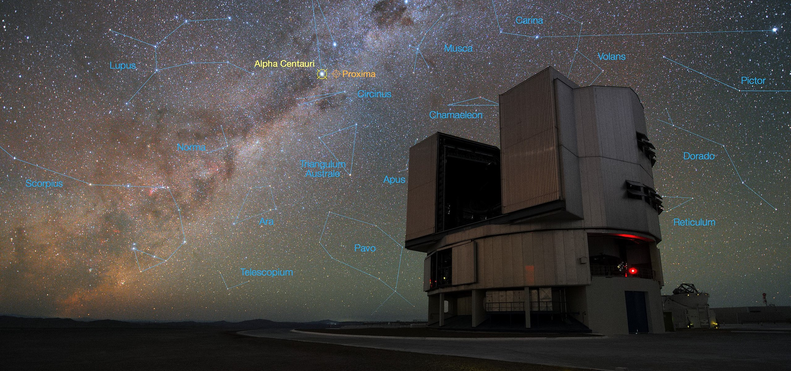
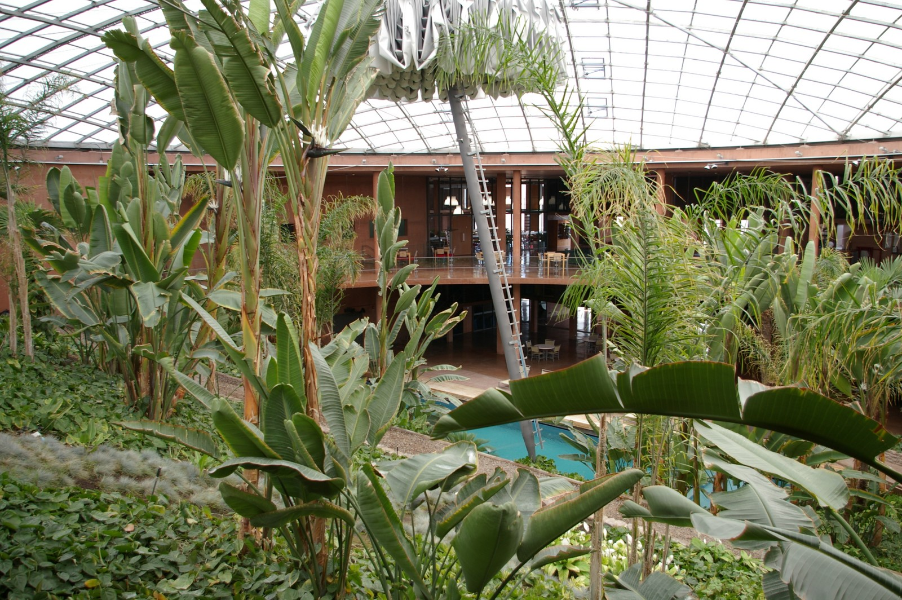

The Very Large Telescope
 The Very Large Telescope (VLT) is actually four separate telescopes, which can be used seperately or combined. If we use just one to collect light for an hour, we can see objects that are four billion times fainter than what we can see with our eyes!The telescopes are located in the Atacama Desert in northern Chile, South America. The Atacama Desert is one of the driest places in the world, and as such is home to many astronomical observatories. In fact, the successor to the VLT is currently under construction! It's called the Extremely Large Telescope (very creative, we know) and is going to be the world's largest optical/near-infrared telescope.
The VLT is located on a mountain peak, 2600 m above sea level. Because of this, almost every night is clear unlike here in the UK. The humidity is low allowing observations in almost all wavelength ranges available from Earth. That means we can get observations all the way from ultraviolet to mid-infrared .

Thanks to the excellent infrastructure in Chile, going there is nowadays only a matter of one or two days, which allows astronomers to travel from the UK to the observatory and observe their targets. In fact, the ESO Paranal Observatory (which host the VLT telescopes ,see picture) is one of the largest observatories in the world with about one hundred technicians and scientists being on site every day. So many people visit, that a special hotel had to be contructed. It's called Paranal Residencia and was actually featured in the 2008 James Bond Film, Quantum of Solice. Taking a look you can see why it was picked. Not only is the site very pretty, but it boasts and indoor pool, garden and cinema!
Back